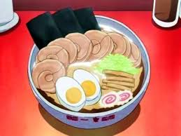
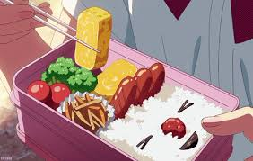
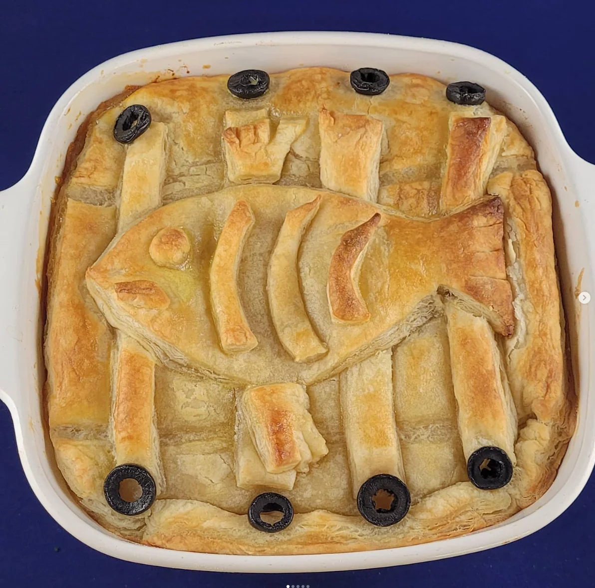

| Naruto |
Ramen |
 |
A popular Japanese noodle dish loved by Naruto. |
View Recipe |
Naruto Uzumaki |
6.5 Hours |
Medium |
| Your Name |
Hina's Bento |
 |
A beautiful bento box filled with various goodies. |
View Recipe |
Mitsuha Miyamizu |
1 hour |
Easy |
| One Piece |
Meat on a Bone |
|
Luffy's favorite dish, perfect for a pirate feast. |
View Recipe |
Monkey D. Luffy |
1 hour |
Easy |
| Attack on Titan |
Potato Dish |
|
A simple, hearty potato dish from the series. |
View Recipe |
Erin Jaeger |
45 mins |
Easy |
| Kiki's Delivery Service |
Herring & Pumpkin Pie |
 |
A lovingly made herring and pumpking dish from the movie. |
View Recipe |
N/A |
1.5 hours |
Medium |